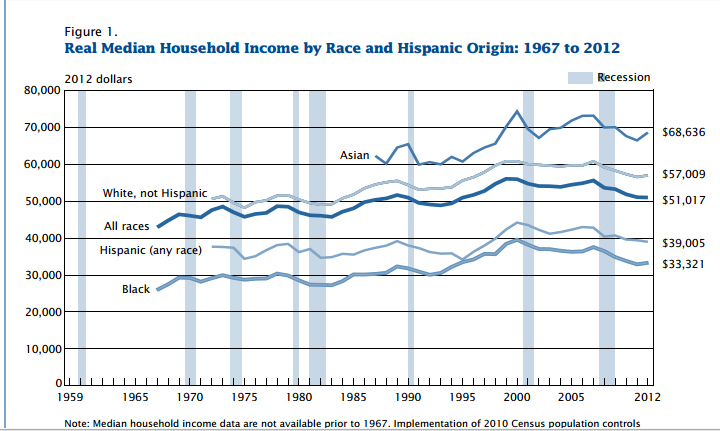

Gack
September 20, 2016
Election Stuff
Recent Polls
- An NBC News/Survey Monkey poll from 9/12 to 9/18 has Clinton ahead by 5 points.
- An LA Times/USC Tracking poll from 9/13 to 9/19 has Trump ahead by 5 points.
Upcoming Stuff
The Presidential Debates are upon us
- Monday, September 26, 2016 at Hofstra University in Hempstead, NY, moderted by Lester Holt, Anchor, NBC Nightly News
The topics are...broad:- America's Direction
- Achieving Prosperity
- Securing America
- VP Debate: Tuesday, October 4, 2016 at Longwood University, Farmville, VA, moderted by Elaine Quijano, Anchor, CBSN and Correspondent, CBS News
- Sunday, October 9, 2016 at Washington University in St. Louis, St. Louis, MO, moderated by Anderson Cooper, Anchor, CNN
- Wednesday, October 19, 2016 at University of Nevada, Las Vegas, Las Vegas, NV, moderated by Chris Wallace, Anchor, Fox News Sunday
Podcast Stuff
- An island no more: Inside the business of the podcasting boom, NiemanLab. (I can attest: I've been branchgin out to several new podcasts across various genres, listening to at least one per day, over the past few months.)
- The Problem We All Live With, This American Life. A story of school reforms, integration, and a case of accidental integration for Normandy School District students

Photo: The Problem We All Live With," Norman Rockwell
Other Stuff
- Racial Segregation Begins in Pre-K NYTimes.
"...one out of every six pre-k classrooms, more than 90 percent of the students were of the same race or ethnicity. In kindergarten, that is true in one out of every eight classrooms." -
Asians have had higher median incomes than all other races in the U.S., U.S. Census Bureau
 - A large chasm in employment between Liberal Arts and STEM-related majors for recent graduates, The Atlantic
- Deep Tech Startups in NYC
The Unemployment Rate
August 2016: 4.9%